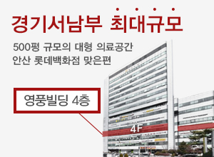

×

에스안과
에스안과소개
의료진소개
병원둘러보기
진료시간/위치
에스안과 소식
사회공헌
시력교정
센터소개
라식 라섹 비교
시력교정술
1Day 검사/수술
초고도근시 클리닉
노안/백내장
노안 백내장 센터 소개
노안과 백내장
1Day 백내장 정밀 검사
백내장수술
노안수술-인공수정체
망막/황반변성
1Day 망막 정밀 검사
황반변성
당뇨망막병증
비문증(날파리증)
망막혈관폐쇄
그 외 망막질환
안구건조증
건조증치료
녹내장
1Day 녹내장
정밀 검사
녹내장이란
녹내장 치료
소아안과
소아클리닉
드림렌즈
근시안약치료
안성형
안검하수
눈꺼풀처짐
눈물흘림
안검내반
예약/상담
온라인예약
온라인상담
카톡상담
수술후기
이벤트